One style for every figure, and a reason for every rule
For papers, theses, posters, talks, reports and infographics: six muted earth pigments computed in a perceptual colour space, a serif claim over a sans body, and the same anatomy in every medium.
⌄ 44 examples, every one drawn by a script from real data ⌄
 small multiples of line charts · matplotlibLife expectancy rose in all 236 countries since 1950, but the trend hides collapses
small multiples of line charts · matplotlibLife expectancy rose in all 236 countries since 1950, but the trend hides collapses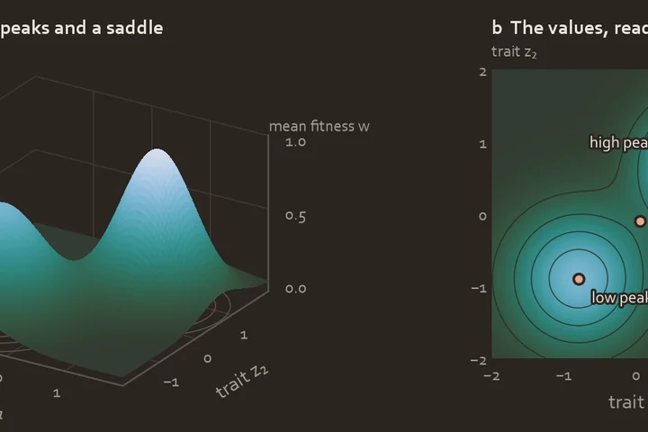
3D surface with twin · matplotlibTwo adaptive peaks, 1.00 and 0.72, are joined by a saddle at w = 0.26 A0 poster · beamerposterBeak shape, not body size, tells penguin species apart
A0 poster · beamerposterBeak shape, not body size, tells penguin species apart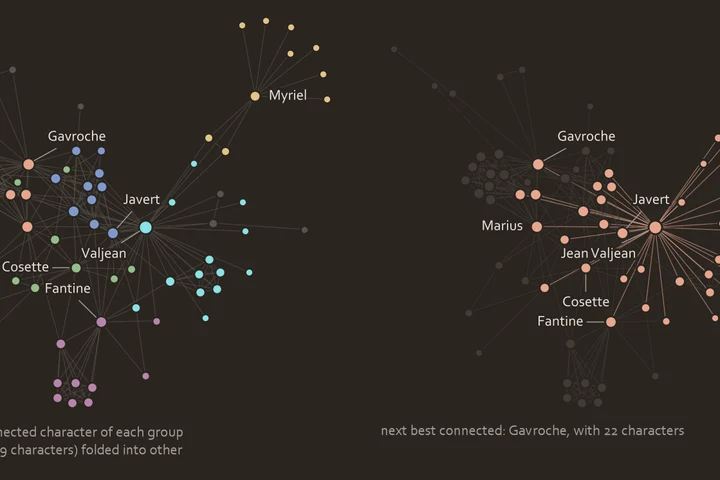
network (two panels) · matplotlibJean Valjean shares a chapter with 36 of the other 76 characters, more than anyone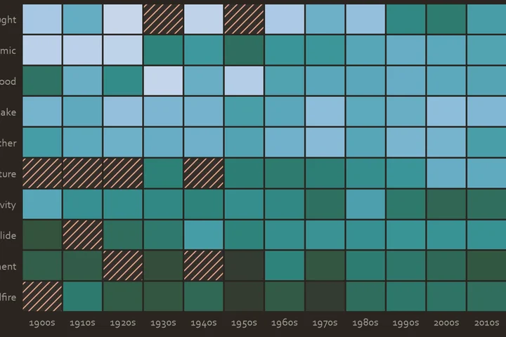
heat map on a named gradient (lagoon, log scale) · matplotlibDroughts, epidemics and floods now kill 33 times fewer people a year than before 1970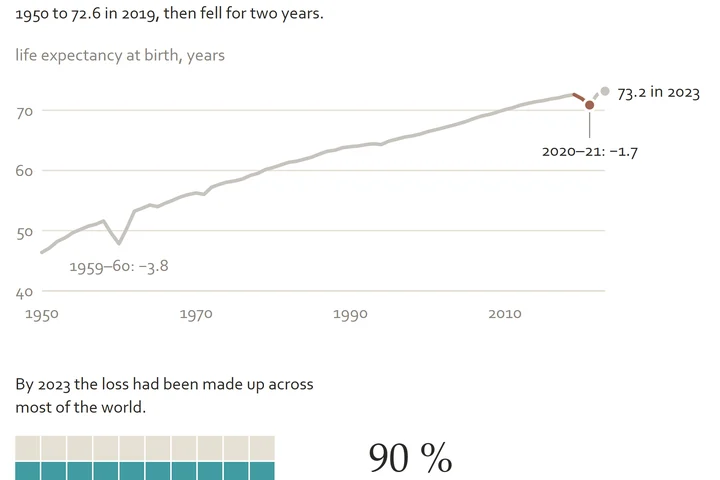
portrait story · HTML + SVGThe pandemic brought world life expectancy its deepest fall since 1960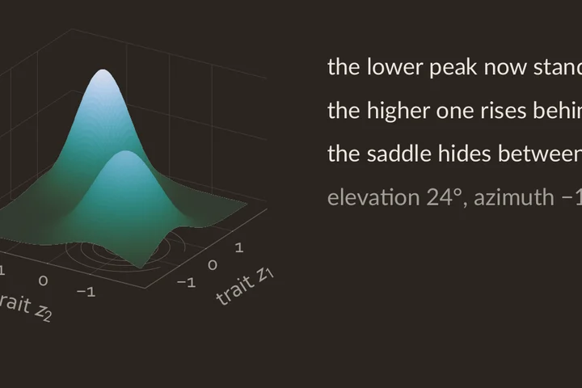
beamer deck · beamerWhere a population starts decides which peak it climbs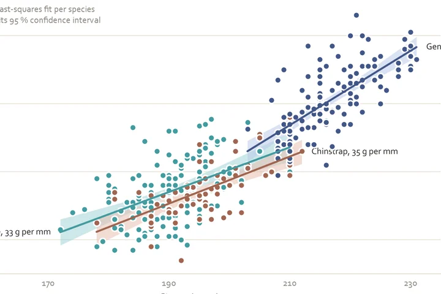
scatter plot with fit lines and confidence bands · matplotlibIn every species, body mass rises by 33 to 55 g with each millimetre of flipper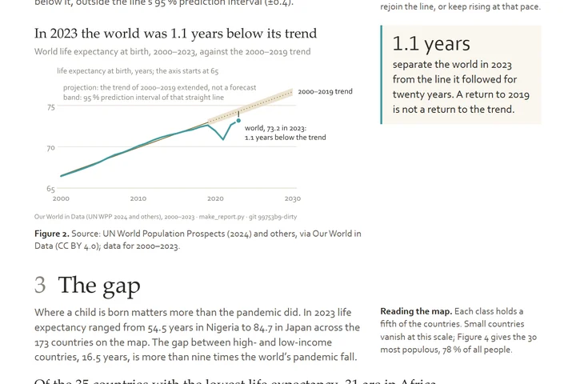
A4 report, 3 pages · HTML + matplotlibRecovered, but not back on track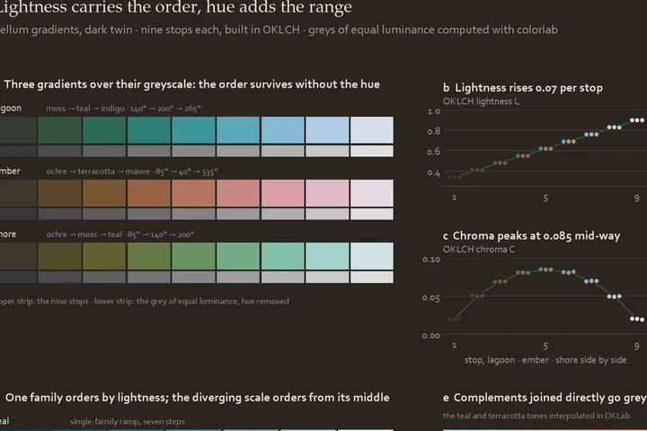
gradient sheet · matplotlibLightness carries the order, hue adds the range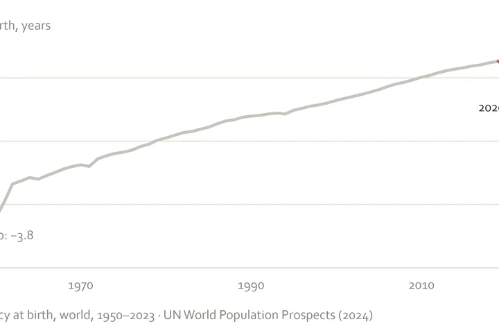
pitch deck, 10 slides · HTML + SVGAn open observatory of mortality data would show the next fall in life expectancy as it happens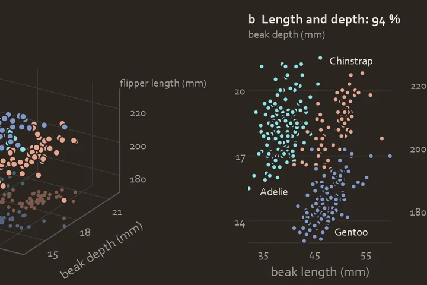
3D scatter with 2D twins · matplotlibThree measurements place 97 % of penguins nearest their own species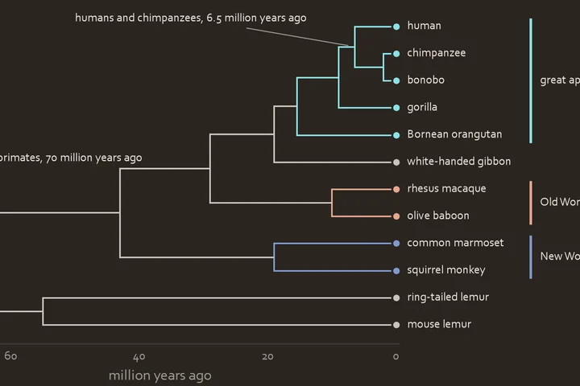
phylogeny (rectangular, time-scaled) · matplotlibHumans and chimpanzees split 6.5 million years ago, about a tenth of primate history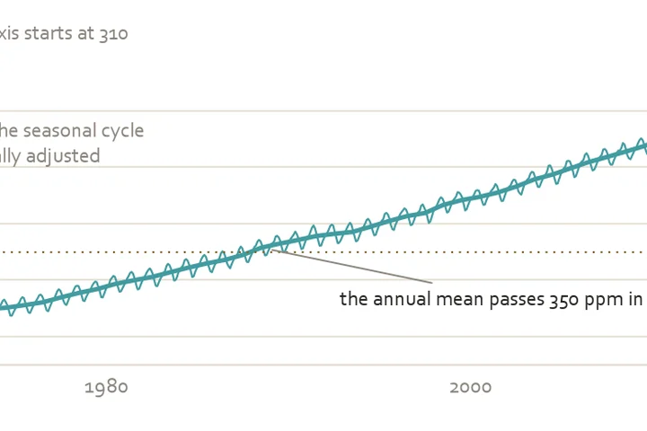
line chart (members and mean) · matplotlibCarbon dioxide at Mauna Loa rose in every year from 1959 to 2019, by 96 ppm in all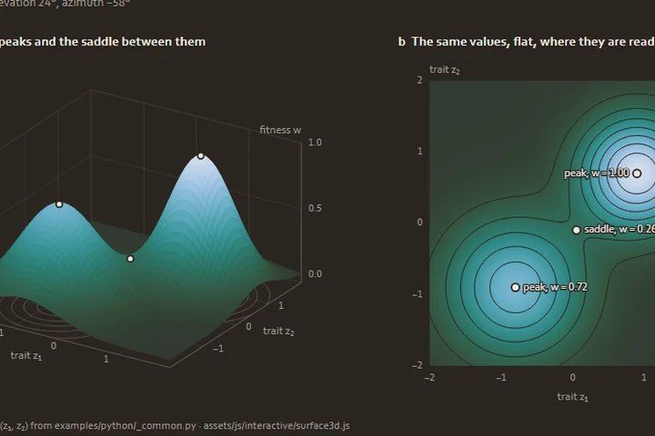
rotatable 3D surface with heat map twin · JavaScript (vellum-web.js)Two adaptive peaks, at w = 1.00 and 0.72, are joined by a saddle at w = 0.26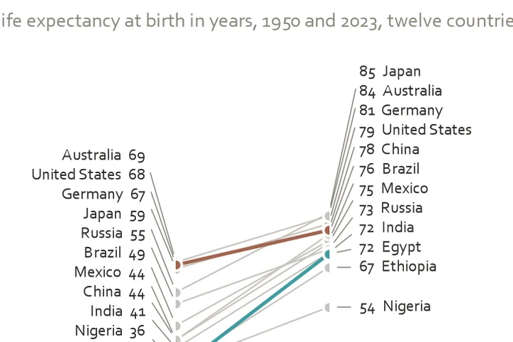
slope chart · matplotlibEgypt gained 38 years of life, the US 11Every form, by the job of the data
Name what the data must do, then take the form. Each family of jobs has its colour; every icon leads to the rules for its form or to a worked example. The last row is the forms Vellum turns down, and why.
Distribution
Relation
Comparison and ranking
Part of a whole
Change over time
Maps
Flow, trees and networks
The third axis, with its twin
Forms Vellum does not use
- Radarnot used for comparison: area and angle distort the values
- 3D piedepth encodes nothing and enlarges the front slice
- Second y axistwo measures are two panels, or an index to a common base
- Rainbow scaleno order the eye can read; lightness rises and falls
- Word cloudsize of a word is not readable as a value
- Twelve-slice piemore than six slices cannot be compared
The style files
Seven things that are always true
These seven marks identify a Vellum figure. They hold in every medium, from a journal column to an A0 poster to a phone screen, and in both twins: the white page and the warm charcoal one used for talks.
1A white page, cream cards
The surface is white (warm charcoal
#2A2520in the dark twin) and every grey on it is warm. Panels, tiles and boxes are cream. A figure never sits on cream, so a journal never needs a second version.2The title is a claim
A sentence with a verb, set in Palatino, left aligned, in ink. "Carbon dioxide rose every year since 1959", not "CO₂ over time". The rest of the text is a humanist sans.
3Six families, one fixed order
Series take the tones in the order teal, terracotta, indigo, ochre, mauve, moss, and never reorder to taste. Areas take the matching tints; emphasis and text on a tint take the deep step.
4Direct labels, no legend box
A line ends in a dot ringed in the surface colour and a label in ink. Four series or fewer get no legend; five or six get a legend and keep their end labels; seven or more are folded or faceted.
5A hairline grid, no frame
Horizontal gridlines only, hairline, one step off the surface. No top, right or left spine, no box, no vertical grid, never a dashed grid. The data are the loudest thing on the page.
6A unit line, never a rotated label
The quantity and its unit sit as a short line above the y axis, in muted text, read the right way up. The x label stays under its axis.
7A footer that traces the figure
Bottom left, small, muted: the data, the script that drew it and the git commit, with
-dirtywhen the tree was not clean. A figure that cannot be traced is not finished.